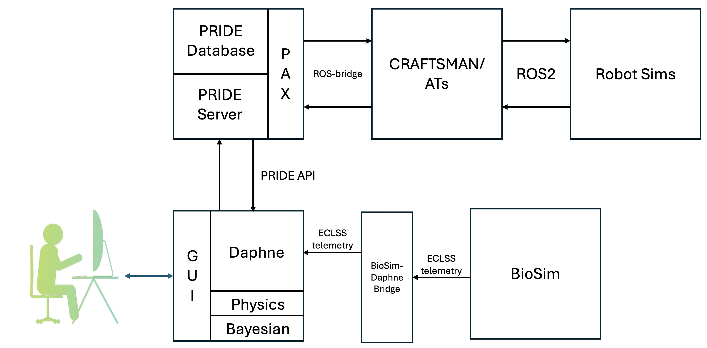

Virtual assistant that detects and diagnoses faults. Hosts several diagnostic methods side by side: knowledge-graph symptom matching, Bayesian network inference [2], time-series matching [3].
Adjustably autonomous procedure execution. Carries out recovery procedures and requests operator approval at consequential decision points.
Semi-autonomous IVA and EVA robotic caretakers that perform inspection and repair.
Bidirectional: diagnosis requests inspection; evidence gathered by the robots refines the fault hypotheses.